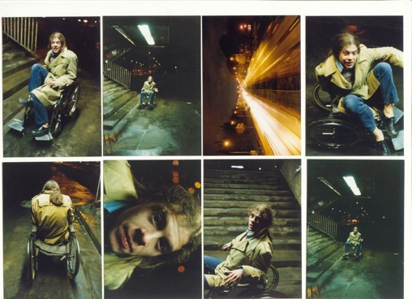
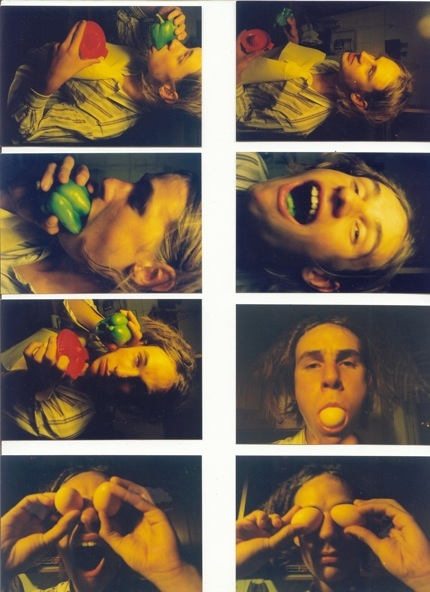

copyright by Jan Lubicz Przyluski - All Rights Reserved




Dr Bourbon (Ant),
Dr Bourbon (Jan), w akcji “Mistrz/Wózek”, fot. Łukasz Gutt
Dr Bourbon (Jan i Łukasz), rys. JLP
Dr Bourbon
(razem z Łukaszem Guttem i Antonim Nykowskim)
1998-1999